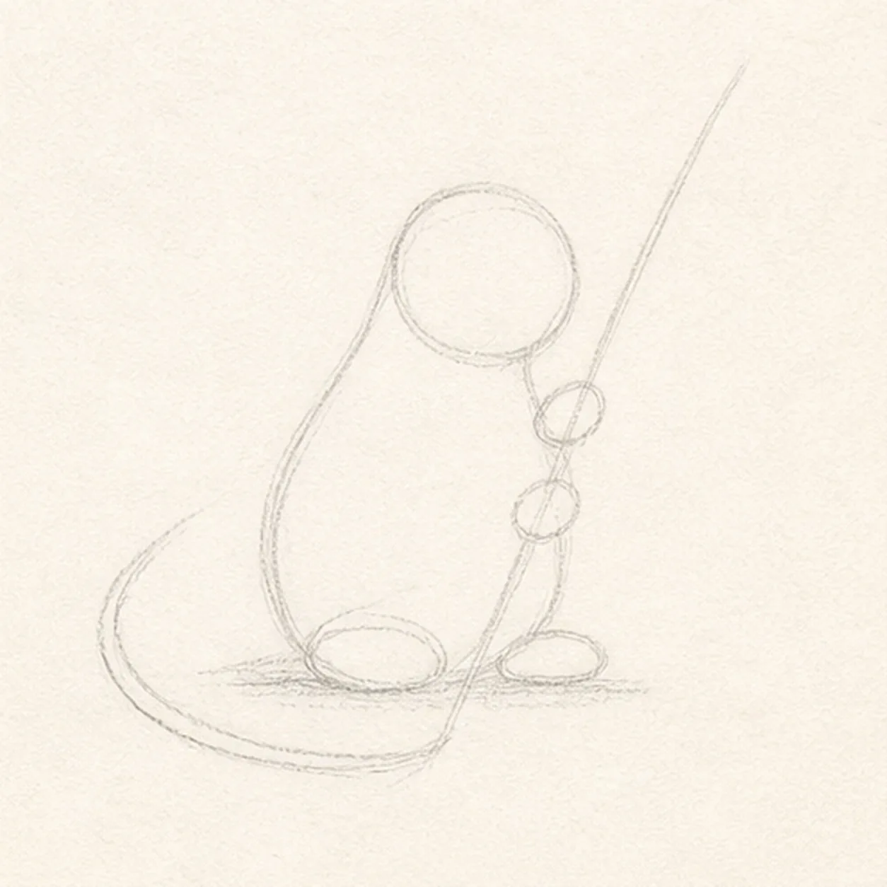
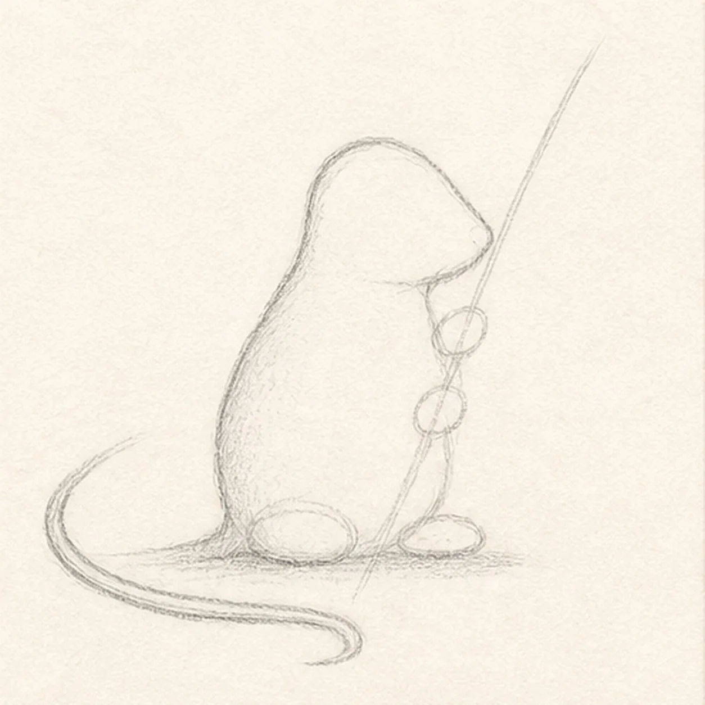
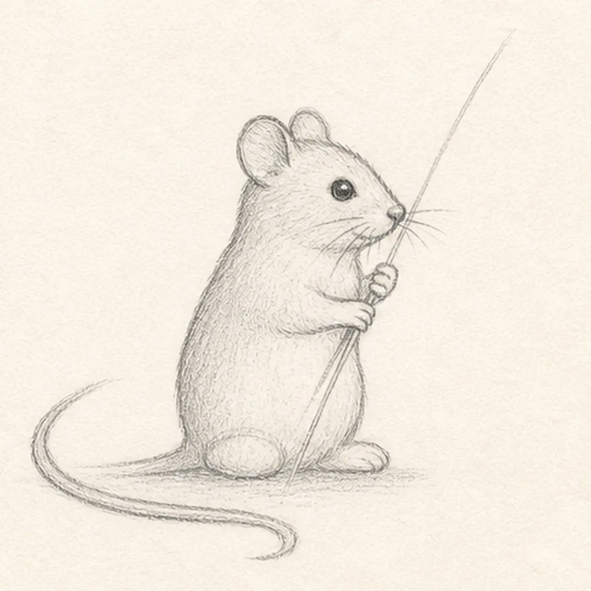
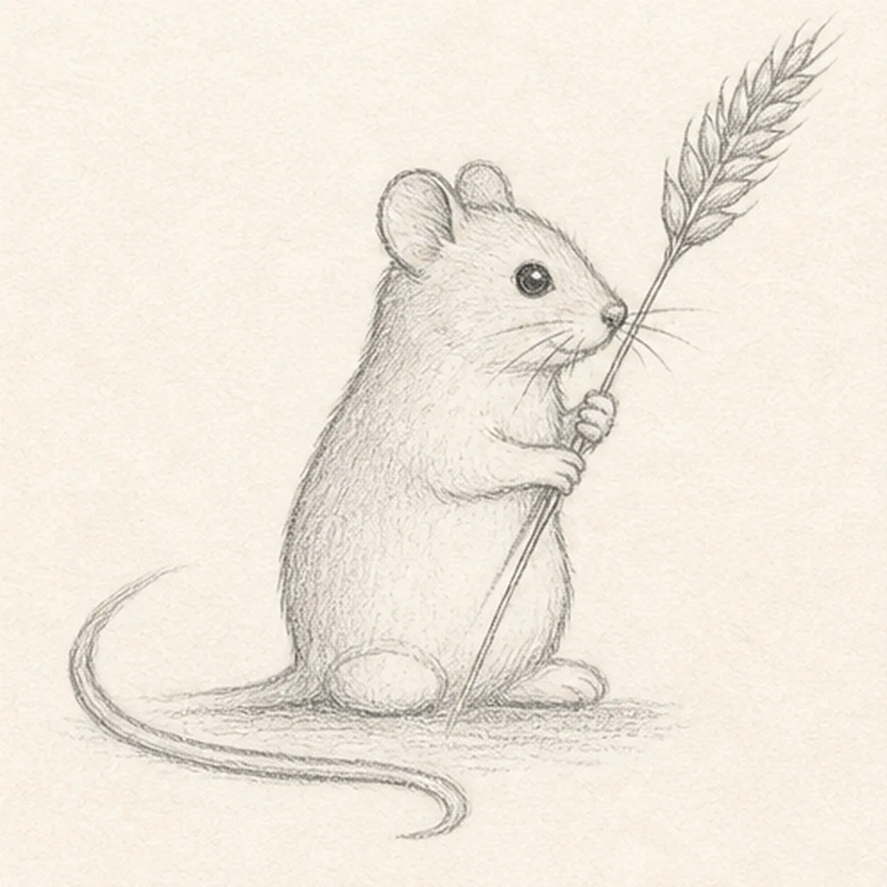
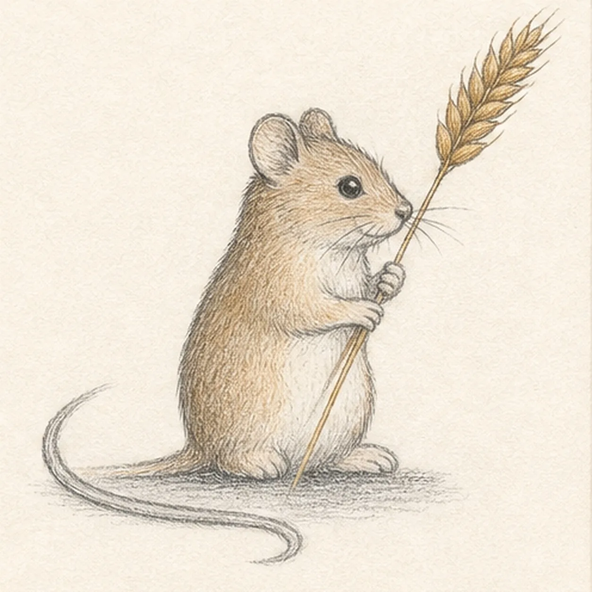

Pencil ready?
Let's draw a harvest mouse holding wheat
Treat this as one small practice round: build the subject lightly, notice the shapes, then darken only the lines that help the finished sketch.
-
01

Map the mouse and wheat route
Use pale HB to place a head circle, pear-shaped body envelope, two foot ovals, two paw ovals, one curved tail gesture, one diagonal wheat route, and a short shadow footprint.
Sketch tip: Keep the first frame open and simple. Reserve the two paw ovals around the stalk route now, so the stem will not need to be erased out of the hands later.
-
02

Connect the soft silhouette
Connect only the right-facing head and body into one soft mouse silhouette, then draw the long thin tail while preserving the pale paw, wheat, face, and shadow guides.
Sketch tip: Use one fuller curve over the back and a smaller inward curve beneath the chin. Let the tail start thick at the body and taper smoothly as it curls away.
-
03

Add ears paws and face
Draw exactly two rounded ears, two small paws around the established stalk route, one eye, one tiny nose, and a few short whiskers.
Sketch tip: Keep the two ears close but not perfectly matched. Place the eye a little higher than the nose so the small head still has room to point forward.
-
04

Build the wheat head
Turn the upper stalk route into one narrow wheat head with paired grains, then add the existing short broken shadow beneath the feet.
Sketch tip: Start each grain at the center stem and angle it outward. Keep the wheat narrow enough that the mouse remains the main shape.
-
05

Set gentle pencil value
Add soft graphite fur hatching, warm brown mouse tint, ochre wheat tint, and cool-gray shadow only to the established mouse, stalk, wheat head, and ground.
Sketch tip: Follow the mouse body curve with short pencil strokes. Leave the belly and ear interiors lighter so the tiny animal does not turn into one dark mass.
-
06

Finish the little harvester
Clarify only the established keeper contours, fur texture, restrained color, wheat grains, and short shadow.
Sketch tip: Count one mouse, two ears, two paws, one tail, one stalk, and one wheat head before stopping. A few clean dark marks will read better than extra background details.